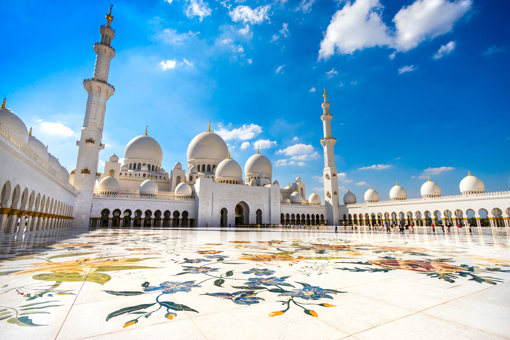
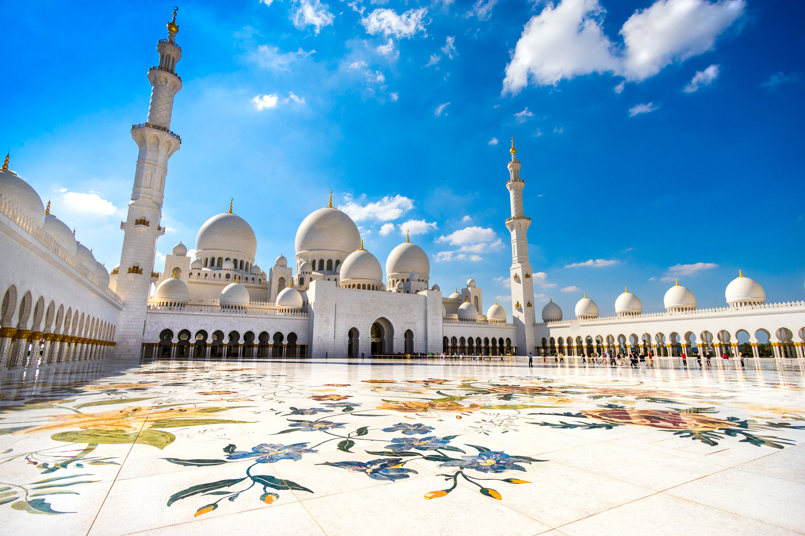
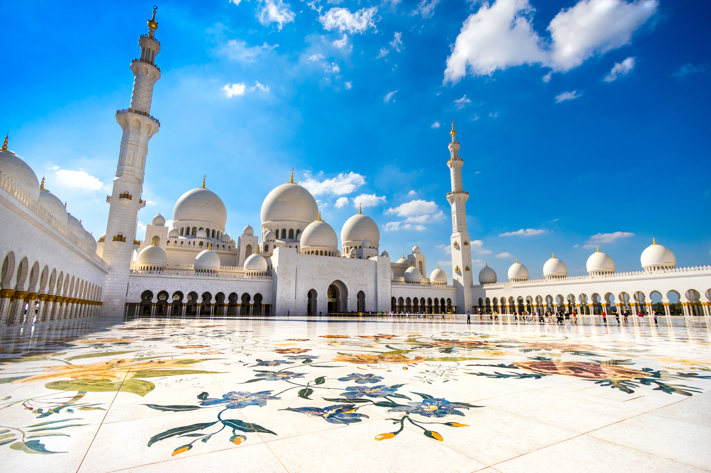

The Sheikh Zayed Grand Mosque is one the world's largest mosques and a massive architectural work of art that intentionally blends different Islamic architectural schools.
It features 82 domes, more than 1,000 columns, 24-carat-gold gilded chandeliers and the world's largest hand-knotted carpet.
Sheikh Zayed Grand Mosque is a colossal place of worship; big enough to accommodate over 40,000 visitors.
The largest mosque in the UAE and third largest in the world, the complex covers over 22,400sqm.
The main prayer hall can hold more than 7,000 worshippers, and there are two smaller prayer halls with a capacity of 1,500 each. Such is the mosque’s size that more than 100,000 tonnes of Greek and Macedonian marble were used in its construction.

 
